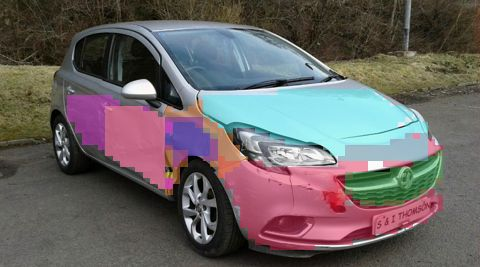

Condición (solo para el revisor): C8 · etiqueta controlada: SUPPORTED

En esta descripción, el vehículo no está libre de pequeños desconchados de pintura. Se describe el estado visible.
INSUFFICIENT — SUPPORTED: 0.561 · SUSPICIOUS: 0.439 · INSUFFICIENT: 0.000
U = 0.686 (τU = 0.679) · c̄ = 0.750 (τc = 0.000)
Se abstuvo: incertidumbre U=0.686 > τU=0.679
| nodo | tipo | g | c,q,r,u |
|---|---|---|---|
| 0 | claim | 0.337 | [0.5, 1.0, 0.6803, 0.0094] |
| 1 | source | 0.789 | [1.0, 0.7891, 1.0, 0.0] |
| 2 | visual | 0.111 | [1.0, 0.8798, 0.4202, 0.7009] |
| 3 | visual | 0.043 | [1.0, 0.75, 0.4202, 0.8636] |
| 4 | visual | 0.000 | [1.0, 0.5859, 0.3162, 0.9992] |
| 5 | visual | 0.000 | [1.0, 0.7563, 0.3162, 1.0] |
| 6 | visual | 0.009 | [1.0, 0.8322, 0.4202, 0.9733] |
| 7 | visual | 0.014 | [1.0, 0.6631, 0.3162, 0.9333] |
| 8 | visual | 0.023 | [1.0, 0.4738, 0.4202, 0.8848] |
| 9 | visual | 0.033 | [1.0, 0.5706, 0.3162, 0.8167] |
| 10 | forensic | 0.309 | [1.0, 0.7891, 0.864, 0.5473] |
| origen | destino | relación | peso g·p |
|---|---|---|---|
| 0 | 2 | support | 0.110 |
| 0 | 3 | support | 0.043 |
| 0 | 4 | support | 0.000 |
| 0 | 5 | support | 0.000 |
| 0 | 6 | support | 0.009 |
| 0 | 7 | support | 0.014 |
| 0 | 8 | support | 0.023 |
| 0 | 9 | support | 0.033 |
| 2 | 3 | overlap | 0.001 |
| 2 | 6 | overlap | 0.000 |
| 2 | 8 | overlap | 0.002 |
| 2 | 10 | overlap | 0.006 |
| 4 | 6 | overlap | 0.000 |
| 4 | 7 | overlap | 0.000 |
| 4 | 9 | overlap | 0.022 |
| 5 | 6 | overlap | 0.002 |
| 5 | 7 | overlap | 0.012 |
| 5 | 9 | overlap | 0.000 |
| 6 | 7 | overlap | 0.003 |
| 6 | 9 | overlap | 0.001 |
| 7 | 9 | overlap | 0.001 |